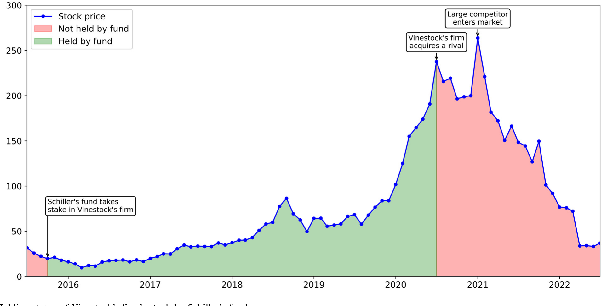
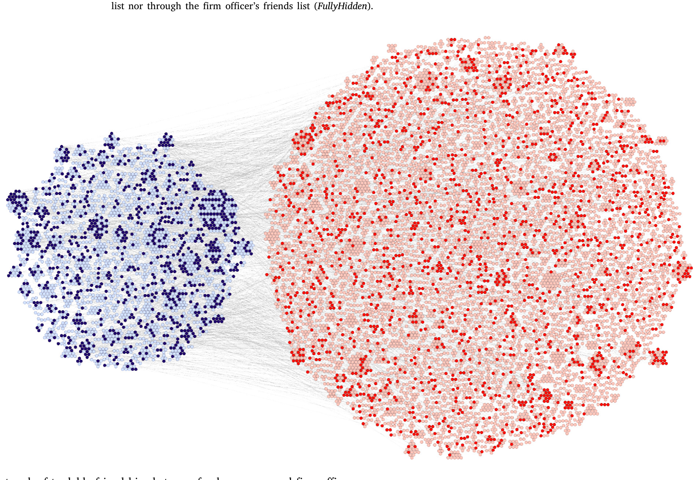
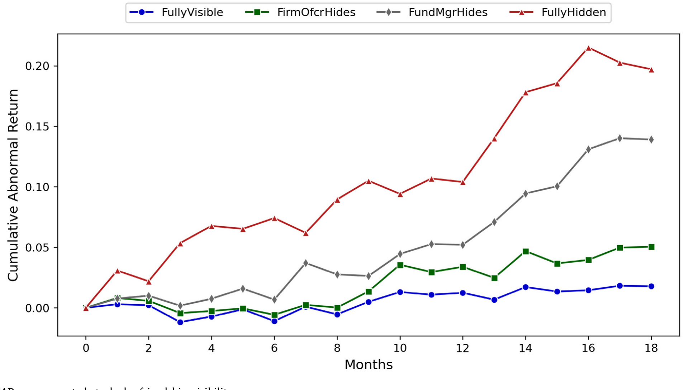
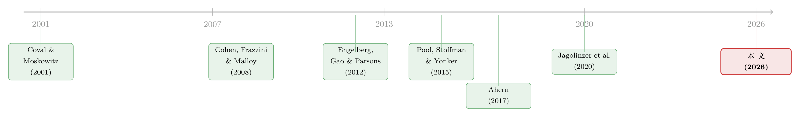

把朋友藏起来的人，赚到了 16% 的超额收益
本文读的是 Ammann, Cochardt, Cohen & Heller (2026, Journal of Financial Economics)：他们用十万多个 Facebook 个人主页、三千五百万条好友关系，去识别基金经理与上市公司高管之间「被刻意隐藏」的友谊；结果发现，恰恰是那些双方都把好友列表藏起来的连接，平均每月带来 135 个基点的异常收益（年化超过 16%，t = 3.54）。真正会说话的，不是「你认识谁」，而是「你选择把谁藏起来」。
1 引言：一个藏在「好友列表」里的悖论
先讲一个发生在样本里的真实故事（名字已被论文匿名化）。
一位叫 Vinestock 的女士，是好几家科技公司的 CEO 兼董事；她有一位 Facebook 好友叫 Schiller，是一只大型主动管理型共同基金的基金经理，自称信奉「深度基本面分析」。两人都是 Facebook 的活跃用户——但他们之间是一种被作者称为 FullyHidden 的连接：双方都把自己的好友列表设为私密。在任何常规的社交网络分析里，这条关系是隐形的。他们没有共同的学校、共同的雇主、共同的居住地，也没有任何公开记录能把两人联系起来。
2015 年中，Vinestock 出任一家科技公司的董事长，那时 Schiller 的基金对这只股票一股未持。然后呢？一个季度内，基金开始在 20 美元附近建仓，并在随后四年里不断加码（见图 1）。这期间公司利好不断——收购了一个关键对手、进军欧洲、签下新的国内合作——股价节节攀升。Schiller 在 200 美元以上清仓，赚了十倍有余。退出之后，公司陷入并购整合困境、新竞争者杀入，股价跌去 60% 以上——而 Schiller 的基金，在整个下跌期间始终空仓。

Figure 1: Holding status of Vinestock’s firm’s stock by Schiller’s fund
这不是孤例。在不同时期、不同基金里，Schiller 一共交易过四只 Vinestock 担任管理职务的股票，平均每月赚 264 个基点的异常收益（t = 2.31）。把镜头拉远到整个组合层面：他在「隐藏连接」股票上的交易，月均异常收益 208 个基点（t = 2.41）；而在「无连接」的持仓上，只有 12 个基点（t = 0.69）——后者几乎就是零。
换句话说，Schiller 并不是一个「整体上更聪明」的基金经理。他的超额收益，几乎全部来自那一小撮被藏起来的关系。
这就抛出了本文真正想讲的那个核心：在金融市场里，一个人「选择隐藏一段关系」这个行为本身，可能比这段关系的存在更有信息含量。 接下来，我们就顺着这条线一步步往下看。
2 数据：把一亿人的社交图谱「逆向」出来
要研究「隐藏」，前提是你得先看见那些本不想被看见的东西。这正是本文最硬核、也最让人咋舌的工程。
作者从 Facebook（一个在美国有超过 2 亿月活用户的平台）入手，手工识别出 1984 到 2020 年间活跃的、超过 100,000 个基金经理与公司高管的个人主页，连同他们的 3500 万 条好友关系。基金持仓、基金收益、基金经理信息来自 Morningstar Direct；公司高管信息来自 BoardEx；股票收益来自 CRSP；公司财务特征来自 Compustat；新闻数据来自 RavenPack；分析师覆盖来自 IBES。整套 Facebook 数据是在 2020 年 1 月到 2023 年 8 月这段窗口里抓取的，但它反映的关系可以一直追溯到 1984 年——因为很多好友是几十年前的高中同学、大学室友、老同事。
首先，他们为每条「基金经理—公司高管」的配对构造一个指示变量，标记两人是否在 Facebook 上相连。这一步本身就极不容易：同名同姓的人太多、用户会隐藏属性、资料常常残缺。作者用了一套三步匹配法（候选集 → 置信度打分 → 人工核对），还利用了一个冷知识——早期 Facebook 用户 ID（0 到 3.5 亿之间）不是顺序分配的，而是按学校分段的，于是可以反推一个人的母校。
但真正关键的一步在于：怎么把「双方都隐藏好友列表」的连接也挖出来？ 这听上去自相矛盾——既然藏起来了，又怎么看得见？作者抓住了 Facebook 平台设计上的一个缝隙：即便你把好友列表设为私密，仍有一些痕迹是非好友可见、却只有好友才能产生的——比如一张照片下众多点赞里的某一个「赞」、一条评论、一次标记（tag）。这些痕迹可能几个月后就被删掉或替换。通过分析这种「可见但不可伪造」的互动痕迹，再叠加 Facebook 的「共同好友」(Mutual-Friends) 功能做递归推断，他们得以在双方都隐藏的情况下，仍然还原出这条隐形的边。

Figure 3: Network of tradable friendships between fund managers and firm officers
于是，每条连接被分成几类：公开可见的、单方隐藏的（只有基金经理藏 / 只有高管藏）、以及双方都藏的 FullyHidden。本文的全部火力，都对准了「隐藏」这个维度上的梯度。
3 识别策略：让「隐藏程度」自己说话
这篇论文没有一个教科书式的、干净的双重差分 (difference-in-differences, DiD) 或工具变量 (instrumental variable, IV)。它的识别，靠的是三块拼图层层咬合，把「这就是内幕信息流」之外的解释一个个排除掉。
接着，一个自然的问题是：连接股票的高收益，会不会只是「熟悉偏好」(familiarity bias)？也就是说，基金经理只是因为认识、亲近，才更愿意买朋友的公司？作者指出：熟悉偏好既解释不了「连接股票为何跑赢无连接股票」，更解释不了「为何收益还随隐藏程度单调上升」——你对一个朋友更熟，不该取决于你们是否把好友列表设为私密。
然后是更精致的对手假说：选择 (selection)。也许成功的人更容易彼此结交（联合匹配），也许某种不可观测的能力同时驱动了「关系被隐藏」和「股票质量更高」。如果真是这样，那么在「隐藏连接」的股票上，无论基金经理持有还是回避，收益都应该一样——因为它们本就排序在同一批好股票上。
但真正关键的一步在于这个时机检验（timing test）：作者发现，同一只隐藏连接股票，在被基金持有的时段里，比没被持有的时段里，每月多出 119 个基点的异常收益（t = 2.59，年化 14%）。这个结果，选择假说和联合选择假说都解释不了——因为如果是排序在同一批好股票上，持不持有不该有这么大的差别。收益只在「隐藏连接的基金经理—高管配对」真正同时在场（一边持股、一边在任）的时段里发生。
于是反转出现了：会说话的不是「关系」，而是「在场的时机」——这恰恰是信息流动、而非事后社交或选择偏好，才会留下的指纹。
这套「靠持有 / 不持有的时机来识别信息」的思路，与从「不必申报的高管」身上挖内幕交易的做法异曲同工，可参见《雷达之下：不必申报的高管，在自家股票上赚了多少？》。
4 主要结果：收益随「隐藏程度」单调爬升
现在来看核心数字，量级相当惊人。
最隐蔽的那一类——双方都隐藏的 FullyHidden 连接——平均每月带来 135 个基点的风险调整后异常收益（t-stat = 3.54），年化超过 16%。而且这不是靠小盘股堆出来的：作者构造的多空策略，市值加权月度 alpha 为 136 个基点（t = 3.57），几乎等同于策略的原始收益 148 个基点（t = 3.88）——说明这块超额收益与已知的风险因子基本不相关。
更漂亮的是单调性。随着「隐藏程度」递减，收益像台阶一样往下走：
- 双方都藏（FullyHidden）：年化 > 16%（t = 3.54）
- 只有基金经理藏：年化 6.7%（t = 1.81）
- 只有公司高管藏：年化 3.6%（t = 1.12）
- 公开可见的连接：年化仅 1.3%，且不显著（t = 0.43）
注意最后一行：那些大大方方公开、谁都看得见的连接，收益和零没有统计上的区别。同时，这些隐藏好友的基金经理，在他们无连接的普通持仓上，收益也小到与零无异。也就是说，超额收益既不来自「这个人天生厉害」，也不来自「认识人」，而是精确地集中在「被藏起来的那条边」上。隐藏程度，俨然成了一把「能否接触到重大非公开信息」的代理尺子。
这种单调性还出现在持仓权重上：相对基准，公开连接的股票被超配约 46%，而 FullyHidden 连接的股票被超配近 200%，在控制时间与公司固定效应后依然显著。
5 机制：信息在哪里、什么时候最值钱
如果这真是信息驱动，那么超额收益应该集中在「信息最值钱」的时刻。作者顺着这条逻辑继续往下挖。
第一，他们把异常收益做了分解，发现它高度集中在盈余公告 (earnings announcements) 与并购 (M&A) 事件附近——正是非公开信息价值最高的场合。

Figure 4: CARs on connected stocks by friendship visibility
第二，他们发现与 CFO 的隐藏连接尤其强大。这很符合直觉：CFO 处在公司信息披露的塑造与时机安排的核心位置。
第三，也是最有说服力的外部佐证：被 SEC 立案并追诉的内幕交易案件，显著更可能牵涉 FullyHidden 连接。换句话说，监管机构独立认定的「真·内幕交易」，和本文用 Facebook 痕迹挖出来的「最隐蔽连接」，在很大程度上对上了号。
第四个检验最干净利落——一个安慰剂 (placebo)。在指数基金里，主动选股和择时按设计就被锁死了，隐藏连接即便存在也无从施展。作者发现：主动基金里强劲而稳健的效应，在指数基金里完全消失。
最后，他们还回应了一个内生性顾虑：会不会是事后社交？即业绩好的基金经理「事后」去结交、并隐藏与成功高管的关系？作者直接检验，没找到证据支持——而且收益没有任何反转 (reversal)，说明这些交易携带的信息是被永久并入公司基本价值的，而非短暂的价格扰动。还有一个反直觉的细节：Facebook 2004 年才诞生，按「早期样本被选择性识别」的担忧，效应应该在早期更弱才对；但结果恰恰相反——2004 年之后效应更大、更显著，并一路增强到今天。
6 文献脉络
这篇论文站在一条「社会关系如何在金融市场里传递信息」的长河里。
最早把「地理与信息」连起来的，是 Coval & Moskowitz (2001)——他们发现基金经理在本地股票上的知情交易能赚到超额收益。真正点燃这条线的，是 Cohen, Frazzini & Malloy (2008)：他们用「教育校友网络」证明，基金经理在与之有校友关系的公司高管所管理的股票上，交易更大、更赚钱。此后这条线开枝散叶——Engelberg, Gao & Parsons (2012) 的「有钱的朋友」、Cai & Sevilir (2012) 的董事会连接与并购、Pool, Stoffman & Yonker (2015) 的「邻里效应」，都在用各种「连接代理」捕捉信息流动。

而离本文最近的两块基石是：Ahern (2017) 直接用非法内幕交易的线人网络，证明信息确实沿着强而持久的社会关系流动；以及 Jagolinzer et al. (2020) 关于政治连接与内幕交易信息含量的工作。本文的独特之处在于：以往的代理（地理临近、共同雇主、校友）都是公开可观测的，而且常常把人误判为「相连」；本文第一次把焦点放在「披露还是隐藏」这个内生选择本身上，并证明它比任何公开可观测的网络特征都更能预测未来股价。
关于「如何把真正的社交关系从地理临近里干净地剥离出来」，可参见《见面，还重要吗？——把「线下社交」从「地理临近」里剥离出来》。本文走的是另一条路：不剥离临近，而是直接观测「隐藏」这个动作。
7 评论与延伸（Q&A + 研究方向）
(a) 几个可能的疑问
Q：这到底算不算因果识别？会不会只是相关性？
严格说，这不是一个 RCT 式的因果设计，没有外生冲击。但作者用「持有 vs 不持有时段」的时机检验（119 bps/月，t = 2.59）排除了选择与联合选择，用指数基金安慰剂排除了「天生会选股」，再用 SEC 立案的重合做外部验证。三块拼图叠在一起，已经把「信息流」之外的主流替代解释逐一堵住——在不可能做实验的内幕交易话题上，这大概是能做到的最强证据之一。
Q：「隐藏好友列表」和「赚到超额收益」之间，会不会只是反向因果——先赚到钱，再去藏朋友？
作者专门查过这个事后社交假说，没发现证据；而且 Facebook 痕迹是同期互动（点赞、评论），指向当下的信息流而非事后补建的关系。最关键的是收益无反转——若是事后包装，价格不该长期不回头。
Q：FullyHidden 连接的收益（年化 16%）会不会被几只暴涨的小盘股拉高？
不太可能。所有结果都是市值加权的，且样本结构上锚定在主动基金交易的全体公司，本就偏向流动性更好的大票。市值加权 alpha（136 bps）与原始收益（148 bps）几乎相等，也说明不是靠极端小票。
Q：为什么公开可见的连接反而几乎不赚钱（1.3%/年，不显著）？
这正是全文最精妙的反转。能大方公开的关系，往往是无伤大雅、不涉及敏感信息的；而真正承载重大非公开信息的关系，当事人有强烈动机把它藏起来。于是「隐藏」这个动作，恰好筛出了信息含量最高的那一小撮边。
Q：这是不是说这些基金经理都在违法？
论文用词很谨慎——"suggestive of insider trading"。它提供的是与知情交易高度一致的统计证据，而非对任何个人的法律认定（个人也都被匿名化）。它更像是给监管者提供了一种「该往哪里看」的新雷达。
Q：和「校友 / 邻里」这些老代理相比，本文的真正增量在哪？
老代理识别的是「是否相连」，且公开可测、易误判。本文识别的是「相连之后选择隐藏与否」——一个内生的行为选择。结果显示这个选择维度的预测力碾压所有公开网络特征，这是过去文献完全没碰过的层面。
(b) 几个可能的研究问题与提案
1. 隐藏连接会不会也出现在公司债 / 信用市场？ 【经济故事】债券投资者与发债公司 CFO、财务团队的隐藏关系，可能在评级下调、债务重组、违约前的窗口里同样值钱——而信用事件的非公开信息往往比股票盈余更「黑箱」。【可行性】中。需要把 Facebook 网络对接到债券持有人（如保险公司、债券基金，TRACE + Lipper/eMAXX 持仓），识别策略可平移本文的「持有 / 不持有时机」检验；难点在债券投资经理的个人主页比股票基金经理更难匹配。
2. 隐藏连接与外资持有人。 【经济故事】跨境的隐藏关系（如海外基金经理与本土高管）是否带来更大的信息租金？外资因信息劣势常被认为「处于不利位置」，但一条隐藏的私人关系或许能逆转这一点。【可行性】中偏低。需要把 Facebook 之外的跨国社交平台（LinkedIn、本地平台）纳入，匹配成本高、覆盖不均；但若聚焦少数高质量国家对，仍有 doable 的子样本。
3. 隐藏连接的「信息半衰期」与流动性冲击。 【经济故事】本文说收益无反转、信息最终被并入基本价值。那么这些知情交易在流动性紧张时段（如 2008、2020 年 3 月）是更活跃还是更收敛？知情者会不会在危机里更依赖私人网络？【可行性】高。数据已在手（CRSP + 本文网络 + 流动性指标如 Amihud），只需做时段交互，识别延续本文框架即可。
4. 监管披露规则收紧的自然实验。 【经济故事】Facebook 在 2018 年关停 Graph API、2019 年关掉 Graph Search，使「隐藏」成本骤降。若能找到某次平台隐私政策变化作为冲击，可检验「隐藏更容易之后，隐藏连接的收益是否更高」。【可行性】中。冲击时点清晰，但样本主要覆盖到 2020 年，post 窗口偏短，需要更新数据。
5. 把「隐藏」当作公司治理信号。 【经济故事】若一家公司高管系统性地隐藏与外部投资者的关系，这是否预示更弱的信息环境、更高的诉讼风险或更差的治理？【可行性】中。可在公司层面聚合「高管隐藏连接占比」，对接诉讼 / 重述 / 治理评分；难点是把个人层面的隐藏行为干净地加总到公司层面。
8 参考文献与我的判断
我的判断是：这篇论文的真正贡献，不在于「又找到一个赚超额收益的网络代理」，而在于它把研究对象从「关系的存在」挪到了「关系披露与否的内生选择」上。这是一个概念上的位移——它告诉我们，在信息经济学里，沉默与遮蔽本身就是一种昭示。十万主页、三千五百万好友的工程量令人敬畏，SEC 立案重合与指数基金安慰剂也都打得干净。
要说对识别的担忧，我有两点。其一，整个「隐藏」的还原依赖 Facebook 平台一段特定时期的技术缝隙（可见但不可伪造的互动痕迹），这套测量在多大程度上稳健、可被他人复现，外部读者很难独立验证——它本质上是一个一次性的、依赖平台设计偏好的数据生成过程。其二，「持有 / 不持有时机」检验虽强，但它识别的是「信息流」，无法把「合法的勤勉调研」和「非法的内幕信息」彻底分开——一个真正深耕基本面、又恰好和高管是老友的经理，也可能在合法范围内更早读懂信号。论文用词的谨慎（suggestive）是恰当的。
后续我最想看到的，是把这套「隐藏即信号」的逻辑搬到信用市场和外资持有人上去：股票的盈余信息已经相对透明，而债务重组、评级迁移、跨境信息，才是私人网络租金可能更肥厚的地方。
参考文献
- Ahern, Kenneth R. (2017). Information networks: Evidence from illegal insider trading tips. Journal of Financial Economics 125(1), 26–47.
- Cai, Ye, & Sevilir, Merih (2012). Board connections and M&A transactions. Journal of Financial Economics 103(2), 327–349.
- Carhart, Mark M. (1997). On persistence in mutual fund performance. Journal of Finance 52(1), 57–82.
- Chen, Huaizhi, Cohen, Lauren H., Gurun, Umit, Lou, Dong, & Malloy, Christopher J. (2020). IQ from IP: Simplifying search in portfolio choice. Journal of Financial Economics 138(1), 118–137.
- Cline, Brandon N., & Posylnaya, Valeriya V. (2019). Illegal insider trading: Commission and SEC detection. Journal of Corporate Finance 58, 247–269.
- Cohen, Lauren H., Frazzini, Andrea, & Malloy, Christopher J. (2008). The small world of investing: Board connections and mutual fund returns. Journal of Political Economy 116(5), 951–979.
- Coval, Joshua D., & Moskowitz, Tobias J. (2001). The geography of investment: Informed trading and asset prices. Journal of Political Economy 109(4), 811–841.
- Engelberg, Joseph, Gao, Pengjie, & Parsons, Christopher A. (2012). Friends with money. Journal of Financial Economics 103(1), 169–188.
- Engelberg, Joseph, Gao, Pengjie, & Parsons, Christopher A. (2013). The price of a CEO's rolodex. Review of Financial Studies 26(1), 79–114.
- Fama, Eugene F., & French, Kenneth R. (1993). Common risk factors in the returns on stocks and bonds. Journal of Financial Economics 33(1), 3–56.
- Jagolinzer, Alan D., Larcker, David F., Ormazabal, Gaizka, & Taylor, Daniel J. (2020). Political connections and the informativeness of insider trades. Journal of Finance 75(4), 1833–1876.
- Pool, Veronika K., Stoffman, Noah, & Yonker, Scott E. (2015). The people in your neighborhood: Social interactions and mutual fund portfolios. Journal of Finance 70(6), 2679–2732.